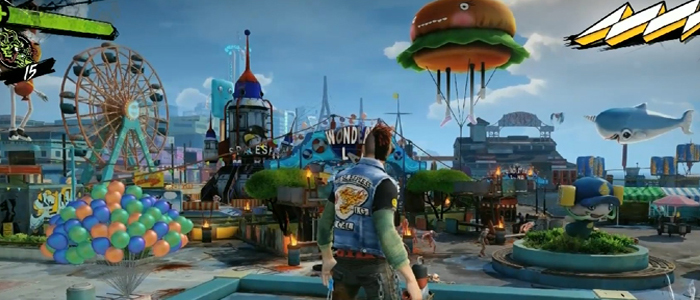

Playing Sunset Overdrive is like a day when you realize you drank one too many Red Bulls. It's a high-speed, grinding, bouncing, blast of insanity, but I didn't say that was a bad thing. As far as open-world games go, Sunset Overdrive is one of the most unique out there.
Once you play through the story and unlock all of the traversal abilites, getting around Sunset City isn't only easy, it's enough fun to forget fast travelling and just travel across the map yourself. The crazy movement is backed up by even crazy weapons and amps. My personal favorite was the TNTeddy, which is basically a launcher that shoots out explosive teddy bears and is every bit as awesome as it sounds.
Amps are a nice additional equip that give extra effects to your movement, melee, and weapons. Put all of this together and you've got a formula for great gameplay like Sunset Overdrive.
Sunset Overdrive's story is what really brings everything together As far as the humor goes, the last time I can remember finding a game as enjoyably funny would be the Borderlands series. The main character, although nameless besides ″Player″, has the perfect personality for the energy drink induced apocalypse. Witty banter, some fun one-liners, and a variety of comments really let you get a feel that your playing as a person, while still knowing you're in the midst of a crazy game.
The downsides are short, but still noticeable. There is a pacing problem, characters introduced and then suddenly gone. In many cases, the full potential of these characters isn't realized and they sit on the sidelines shortly after introduction. That said, the biggest issue is that they make you want to know more and just hanging on the hope that we get some DLC to really dig deeper into the stories of both the Player and these side-characters.
Sunset Overdrive is as beautiful as the game is crazy. Having played all current-gen systems, I believed the Wii U to be the most impressive in regards to visuals because of it's effective use of bright, sleek, and vibrant colors.
For the first time, I can now say the Xbox One has something on that level of quality visually. You never get a dreary feeling in the midst of all the chaotic gameplay and from the environment, effect, and even enemies it is obvious that the visuals were done incredibly well than the darker atmosphered games so far on the the console.
Sunset Overdrive is Insomniac's return to grace for me. Since the days of Ratchet and Clank, they've always had a good formula for the insane. From start to finish, Sunset Overdrive is an immersive, fun, and hilarious experience. Full of high quality characters and an environment to match. It may not re-define the open-world genre, but it sure does give it a well needed wake-up call. From the looks of it, Insomniac has got themselves a franchise with a bright future ahead of it.